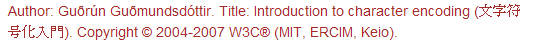
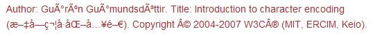
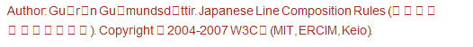

Czym jest kodowanie znaków i dlaczego powinno mnie to interesować?
Jeśli używasz tekstu wykraczającego poza najprostszy tekst angielski, inni mogą nie być w stanie odczytać tworzonych przez Ciebie treści, jeśli nie określisz zastosowanego kodowania znaków.
Na przykład możesz oczekiwać, że tekst będzie wyglądał tak:

Tymczasem może wyświetlić się tak:

Brak informacji o kodowaniu znaków nie tylko utrudnia odczytanie wyświetlanego tekstu, ale może również sprawić, że wyszukiwarka nie znajdzie Twoich danych albo że nie będzie można ich niezawodnie przetwarzać automatycznie na różne inne sposoby.
Słowa i zdania w tekście składają się ze znaków. Przykładami znaków są łacińska litera á, chiński ideogram 請 czy znak pisma dewanagari ह.
Znaki potrzebne do określonego celu grupuje się w zestaw znaków (nazywany również repertuarem znaków). Aby można było jednoznacznie wskazać każdy znak, przypisuje mu się liczbę zwaną punktem kodowym.
Znaki są przechowywane w komputerze jako jeden lub więcej bajtów.
Można to sobie wyobrazić tak, jakby wszystkie znaki przechowywano w komputerze za pomocą specjalnego szyfru, podobnego do szyfrów używanych w szpiegostwie. Kodowanie znaków dostarcza klucza pozwalającego odszyfrować ten kod. Określa przyporządkowanie bajtów zapisanych w komputerze znakom należącym do zestawu znaków. Bez tego klucza dane wyglądają jak niezrozumiały ciąg znaków.
Kiedy wprowadzasz tekst za pomocą klawiatury lub w inny sposób, kodowanie znaków przyporządkowuje wybranym znakom konkretne bajty w pamięci komputera. Aby wyświetlić tekst, następuje odwrotne przekształcenie bajtów w znaki.
Niestety istnieje wiele różnych zestawów znaków i kodowań znaków, a więc wiele sposobów przyporządkowywania sobie bajtów, punktów kodowych i znaków. Osoby zainteresowane szczegółami znajdą więcej informacji w sekcji Informacje dodatkowe.
Zazwyczaj jednak nie musisz znać tych szczegółów. Wystarczy zastosować wskazówki z poniższej sekcji Co to oznacza dla mnie?.
Czcionka to zbiór definicji glifów, czyli kształtów służących do wyświetlania znaków.
Kiedy przeglądarka lub aplikacja ustali, z jakimi znakami ma do czynienia, wyszuka w czcionce glify potrzebne do ich wyświetlenia lub wydrukowania. (Oczywiście jeśli informacja o kodowaniu była błędna, będzie szukać glifów niewłaściwych znaków.)
Dana czcionka zwykle obejmuje jeden zestaw znaków, a w przypadku dużego zestawu, takiego jak Unicode, tylko jego część. Jeśli czcionka nie zawiera glifu określonego znaku, niektóre przeglądarki lub aplikacje szukają go w innych czcionkach zainstalowanych w systemie. Wówczas taki glif może wyglądać inaczej niż otaczający go tekst, przypominając litery wycięte z różnych gazet. W przeciwnym razie zobaczysz zazwyczaj pusty kwadrat, znak zapytania lub inny symbol. Na przykład:

Jako autor treści lub programista powinieneś obecnie zawsze wybierać kodowanie znaków UTF-8 dla swoich treści i danych. To kodowanie Unicode jest dobrym wyborem, ponieważ pozwala obsłużyć za pomocą jednego kodowania praktycznie każdy potrzebny znak. Znacznie upraszcza to pracę. Stosowanie Unicode w całym systemie eliminuje również konieczność śledzenia różnych kodowań i konwertowania danych między nimi.
Autorzy treści powinni dowiedzieć się, jak deklarować kodowanie znaków używane w danym formacie dokumentu.
Pamiętaj, że samo zadeklarowanie na stronie innego kodowania nie zmieni zapisanych bajtów — trzeba również zapisać tekst w tym kodowaniu.
Jako autor treści powinieneś sprawdzić, w jakim kodowaniu edytor lub skrypty zapisują tekst i jak zapisać go w UTF-8. (Obecnie jest to zazwyczaj ustawienie domyślne.) Być może trzeba też sprawdzić, czy serwer wysyła dokumenty z prawidłowymi deklaracjami HTTP.
Programiści muszą zadbać o to, aby poszczególne części systemu mogły się ze sobą komunikować, rozpoznawały stosowane kodowania znaków oraz obsługiwały wszystkie potrzebne kodowania i znaki. (Najlepiej stosować UTF-8 w całym systemie, aby uniknąć tych problemów.)
Poniższe odnośniki prowadzą do dodatkowych materiałów na ten temat.
Ta sekcja zawiera nieco więcej informacji o zależnościach między bajtami, punktami kodowymi i znakami. Jeśli nie interesują Cię szczegóły, możesz od razu przejść do sekcji Dalsza lektura.
W kodowanym zestawie znaków ISO 8859-1 (znanym również jako Latin1) dziesiętna wartość punktu kodowego litery é wynosi 233. Jednak w ISO 8859-5 ten sam punkt kodowy oznacza znak cyrylicy щ.
Te zestawy znaków zawierają mniej niż 256 znaków i bezpośrednio przyporządkowują punkty kodowe wartościom bajtów. Dlatego punkt kodowy o wartości 233 jest reprezentowany przez jeden bajt o wartości 233. O tym, czy bajt ten oznacza é, czy щ, decyduje wyłącznie kontekst.
Istnieją też inne sposoby obsługi znaków różnych systemów pisma. Na przykład zestaw znaków Unicode pozwala reprezentować oba te znaki w jednym zestawie. Unicode zawiera bowiem prawdopodobnie wszystkie znaki, których kiedykolwiek będziesz potrzebować. Litera é nadal ma punkt kodowy o wartości 233, natomiast znak cyrylicy щ ma w Unicode punkt kodowy o wartości 1097.
Z kolei liczba 1097 jest zbyt duża, aby można ją było przedstawić za pomocą jednego bajtu*. Dlatego przy zastosowaniu kodowania tekstu Unicode o nazwie UTF-8 znak щ jest reprezentowany przez dwa bajty. Wartości punktu kodowego nie uzyskuje się jednak przez proste połączenie wartości tych bajtów — potrzebne jest bardziej złożone dekodowanie.
Inne znaki Unicode są w kodowaniu UTF-8 reprezentowane przez jeden, trzy lub cztery bajty.
Zwróć również uwagę, że litera é także jest reprezentowana w UTF-8 przez dwa bajty, a nie przez jeden, jak w ISO 8859-1. (W UTF-8 tylko znaki ASCII są kodowane za pomocą jednego bajtu.)
UTF-8 jest najczęściej stosowanym sposobem reprezentowania tekstu Unicode na stronach internetowych i należy go zawsze używać przy tworzeniu stron oraz baz danych. Zasadniczo jest to jednak tylko jeden z możliwych sposobów kodowania znaków Unicode. Innymi słowy, jeden punkt kodowy Unicode może odpowiadać różnym sekwencjom bajtów zależnie od kodowania dokumentu. Punkty kodowe Unicode można odwzorowywać na bajty za pomocą kodowań UTF-8, UTF-16 lub UTF-32. Znak pisma dewanagari क ma punkt kodowy 2325 (czyli 915 w zapisie szesnastkowym). W UTF-16 jest reprezentowany przez dwa bajty (09 15), w UTF-8 przez trzy bajty (E0 A4 95), a w UTF-32 przez cztery bajty (00 00 09 15).
Istnieją też inne komplikacje, których nie omówiono w tej sekcji (takie jak kolejność bajtów i sekwencje ucieczki), ale przedstawione tu szczegóły pokazują, dlaczego aplikacja, z której korzystasz, musi wiedzieć, jakie kodowanie znaków jest właściwe dla Twoich danych i jak je obsługiwać.
Artykuł Kodowanie znaków: podstawowe pojęcia przystępnie wprowadza zagadnienia takie jak Unicode, UTF-8, zestawy znaków, kodowane zestawy znaków, kodowania znaków, zestaw znaków dokumentu, sekwencje ucieczki znaków i nagłówek HTTP.
Zaczynasz? Wprowadzenie do zestawów znaków i kodowania znaków — wskazuje inne dokumenty W3C dotyczące zestawów znaków i kodowań.
Samouczek: Obsługa kodowania znaków w HTML i CSS — porady dotyczące wyboru kodowania, jego deklarowania oraz innych zagadnień związanych z HTML i CSS.
Ustawianie parametru charset w HTTP — informacje o deklarowaniu kodowania znaków na serwerze lub w językach skryptowych. http://www.w3.org/International/O-HTTP-charset
Ustawianie kodowania w aplikacjach do tworzenia stron internetowych — jak skonfigurować edytor, aby zapisywał pliki w innym kodowaniu, w różnych środowiskach edycyjnych.
Absolutne minimum wiedzy o Unicode i zestawach znaków, które każdy programista musi bezwzględnie znać (bez wymówek!) — artykuł Joela Spolsky’ego, który nieco szerzej, ale nadal przystępnie, omawia kodowanie znaków.
Powiązane odnośniki: Tworzenie stron internetowych